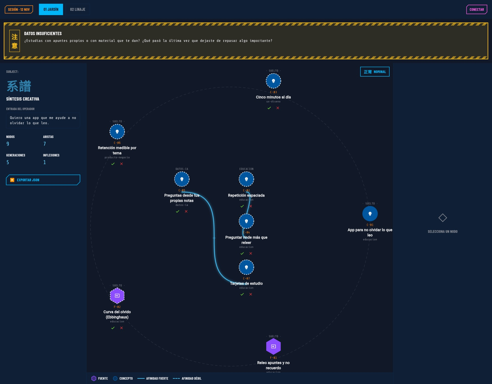
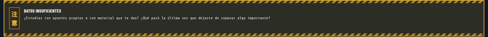
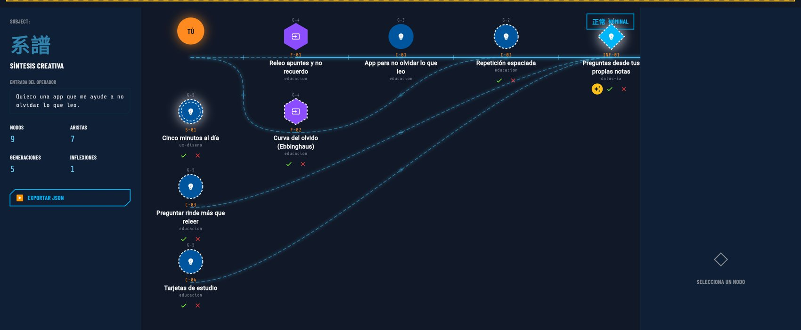
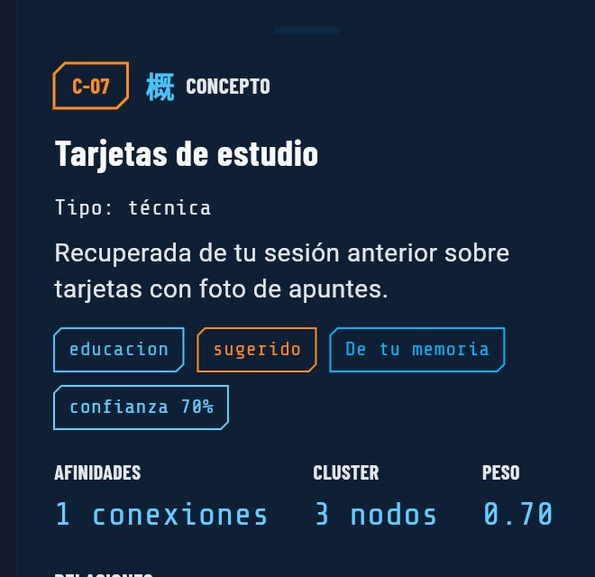
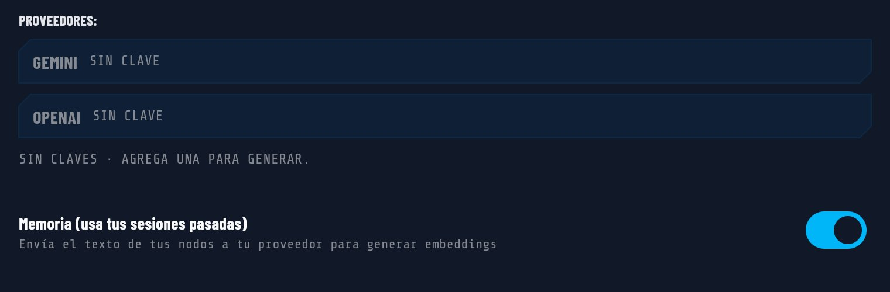

“Quiero una app que me ayude a no olvidar lo que leo.”
Tú pones la frase y lo que ya sabes. Eso es lo único que lleva borde sólido.
¿Estudias con apuntes propios o con material que te dan?
Escribes una frase. La app te devuelve de dónde puede venir tu idea, qué le falta y qué ya habías pensado en otras sesiones. Para dejar de empezar de cero.

“Quiero una app que me ayude a no olvidar lo que leo.”
Tú pones la frase y lo que ya sabes. Eso es lo único que lleva borde sólido.
¿Estudias con apuntes propios o con material que te dan?
Cada uno trae tipo, dominio y confianza. Borde punteado: lo sugirió el modelo. Hexágono: una fuente. Las relaciones se dibujan aparte del linaje.
“Tarjetas de estudio” vino de otra sesión. Se marca como sugerido, con su referencia, y tú decides si se queda.
EJEMPLO ILUSTRATIVO ESCRITO A MANO. NO ES SALIDA DE UN MODELO.
Si escribes menos de 60 palabras, el modelo completa primero un marco de tu idea. Lo que no puede saber, te lo pregunta.
“Quiero una app que me ayude a no olvidar lo que leo.”

El marco viaja en el mismo envío que el grafo. No hay una segunda pasada que duplique coste y espera.
Cada nodo que añade el modelo va como sugerido y con su confianza. Nada sugerido se hace pasar por tuyo.
Un grafo con tipos permite preguntar de dónde viene una idea, qué la contradice y qué la resuelve.

De dónde sale lo que sabes.
Lo que construyes a partir de ellas.
Los temas se normalizan: “software” y “programación” acaban en el mismo cluster, arquitectura-software.
Cada una tiene reglas de qué tipo puede apuntar a cuál. Las que no cumplen se descartan, y el árbol de herencia sigue sin ciclos.
Los nodos de tus sesiones guardadas se indexan como vectores en tu navegador. Al generar, la app recupera lo relevante y se lo pasa al modelo.
Cada nodo pasa a un vector de 256 dimensiones, con tu clave de Gemini u OpenAI.
Los más parecidos a tu idea, más lo que tienen conectado.
Un resumen por comunidad de cada sesión, para ver el panorama.
Hasta 1800 caracteres de memoria entran al prompt, cada línea con su referencia.
Un nodo que viene de la memoria siempre se marca como sugerido y apunta a su sesión de origen. Si el modelo cita una referencia que no se recuperó, se descarta.

LAS CIFRAS SON LAS QUE MUESTRA LA APP PARA LA SESIÓN DE EJEMPLO DE ARRIBA.
Sin servidor propio. El índice vive en el almacenamiento local, y tú decides si la memoria está encendida.
Los embeddings van al mismo proveedor que ya recibe tu idea, con tus mismas claves. Con el interruptor apagado no se recupera ni se indexa nada, y no se envía texto de tus nodos.
Si la memoria falla o tarda más de 5 segundos, la generación sigue sin ella. Nunca se queda esperando.

Genealogía Creativa es un producto del laboratorio de Wantalyze. Experimentamos con nuestros productos, no con tu proyecto.
Ontologías, embeddings y GraphRAG se probaron primero en este prototipo, con 339 pruebas automáticas.
Solo pasa a un proyecto de cliente lo que ahorró tiempo o mejoró la calidad de verdad.
Lo validado se documenta como práctica del estudio y se usa con tecnología actual y ya probada.
El primer momento de valor es ver tu frase convertida en un grafo. La segunda sesión ya parte de la primera.
De Gemini o de OpenAI. Se guarda en el almacenamiento seguro de tu navegador.
Con una línea basta. Si es vaga, la app te hace preguntas de seguimiento.
Cada nodo sugerido tiene su marca para aceptarlo o rechazarlo. Tú mandas.
Es una app Flutter con versión web. Necesitas Flutter instalado y una clave de Gemini u OpenAI.
git clone https://github.com/JuanCamCVillada/Creas.git cd Creas flutter pub get flutter run -d web-server --web-port 8765
Abre localhost, pega tu clave en Ajustes y escribe tu primera idea. Tus claves se guardan en el almacenamiento seguro de tu navegador.
¿Un proyecto parecido? Escribe a wantalyze@gmail.com